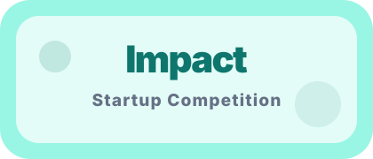
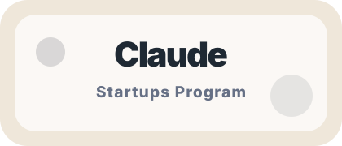
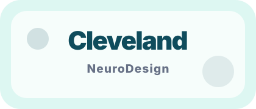
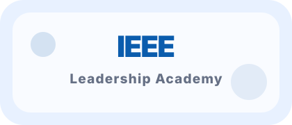
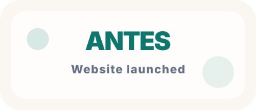
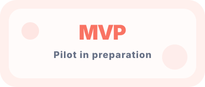

Selected / participantAwards & Milestones
Built through health, AI, and innovation ecosystems.
ANTES Health is early, but we are already building with support from startup, health innovation, AI, and leadership communities that strengthen execution.
Recognition
Early signals of momentum.
Rather than a long list, this section highlights the communities and programs shaping ANTES Health. These are custom logo-style badges for presentation; replace them with official logos only when you have permission to use them.

Accepted
Cleveland, Ohio
Innovation & leadership
Public website live
30–50 user pilotAccepted into the Claude Startups Program to support responsible AI-assisted product development and clearer preventive health communication.
Cleveland NeuroDesign and biomedical engineering experience inform the clinical problem framing and responsible MVP design.
ANTES Health has launched its public website and is preparing a supervised cardiometabolic prevention pilot.
4+
health, engineering, entrepreneurship, and leadership environments informing the founder’s perspective.
Founder strength
Biomedical engineering, medical AI, and digital health experience.
ANTES Health is led by Joselyn Romero Avila, combining biomedical engineering training, medical AI and digital health experience, international research exposure, startup programs, and IEEE leadership.